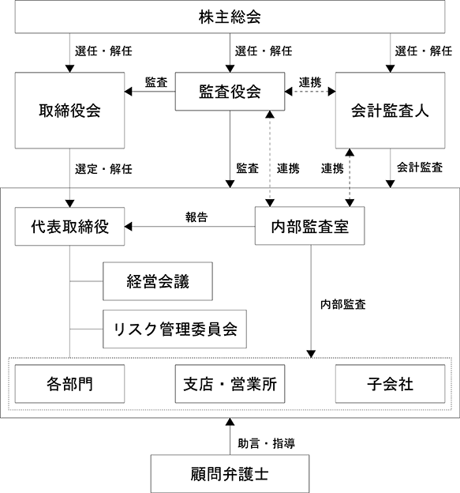

該当事項はありません。
該当事項はありません。
③ 【その他の新株予約権等の状況】
該当事項はありません。
該当事項はありません。
(注) １ 有償一般募集
発行価格 886円
発行価額 840.30円
資本組入額 420.15円
２ 有償第三者割当（オーバーアロットメントによる売出しに関連した第三者割当増資）
発行価格 840.30円
資本組入額 420.15円
割当先 大和証券株式会社
2024年１月20日現在
(注) １ 自己株式は、「個人その他」に7,316単元および「単元未満株式の状況」に58株含めて記載しております。
２ 証券保管振替機構名義の株式は、「その他の法人」に６単元含めて記載しており、「単元未満株式の状況」には含まれておりません。
2024年１月20日現在
2024年１月20日現在
(注) １ 完全議決権株式（その他）の欄には、証券保管振替機構名義の株式が600株含まれております。
２ 単元未満株式の欄には、当社所有の自己株式58株が含まれております。
2024年１月20日現在
該当事項はありません。
該当事項ありません。
（注）当期間における保有自己株式数には、2024年４月１日から有価証券報告書提出日までの取得自己株式数は含めておりません。
当社は、株主に対する利益還元を経営の重要課題として認識し、今後とも安定的な経営基盤の確保と配当性向の維持向上に努めるとともに、業績に連動した配当を積極的に実施することを基本方針としております。配当額につきましては、当面の間、１株当たり年間５円を下限とした上で、配当性向 40％を目途といたします。
また当社は、期末配当の年１回の剰余金の配当を行うことを基本方針としており、これらの剰余金の配当の決定機関は、期末配当については株主総会、中間配当については取締役会であります。なお、当社は、「取締役会の決議により毎年７月20日の最終の株主名簿に記録された株主または登録株式質権者に対し、中間配当をおこなうことができる。」旨を定款に定めております。
内部留保金につきましては、設備投資、研究開発投資、営業組織の拡充等に充当し、長期的な視野に立った財務体質、経営基盤の強化による企業価値の向上に努めてまいります。
なお、当事業年度に係る剰余金の配当は以下のとおりであります。
当社は、健全で透明性が高く、経営環境の変化に迅速かつ的確に対応するための経営の意思決定の効率性を確保したコーポレート・ガバナンスの構築が重要課題と認識し取り組んでおります。
a．取締役会
当社は意思決定の迅速化、委任の明確化のため、取締役会は代表取締役社長高岡伸夫を議長とし、高岡淳子、寒川浩、山田拓幸(社外）、百瀬伸夫（社外）の取締役５名（提出日現在）と比較的少数で構成されており、定数は定款にて15名以内と定めております。また、原則として月１回の定例会を開催し、重要な議案が生じた場合には適時臨時取締役会を開催し、迅速適切な意思決定と業務執行の監督に努めるとともに、業務執行における指示伝達、問題の共有化および意見交換を行っております。
b．監査役会
当社は、監査役会設置会社であり、監査役会は常勤監査役井上雅也を議長とし、嶋津裕介（社外）、水城実（社外）の監査役３名（提出日現在）で構成されております。監査役は、取締役会および必要に応じてその他の社内会議に出席し、取締役の意思決定、業務執行を監督しております。また、適時内部監査室とリスクマネジメントやコンプライアンスについて意見交換を行い、必要に応じて取締役会に監査業務の結果報告を行う等、効果的かつ効率的な監査の実施に努めております。
また監査役は、内部監査室および会計監査人と、相互に連携を密にしており、特に内部監査室とは各々の年度監査計画の立案時において協議を行い、相互に助言、指導を行っております。
c．会計監査人
当社は、仰星監査法人と監査契約を締結し、会社法及び金融商品取引法に基づく監査を受けております。
d．経営会議
経営会議は、代表取締役社長高岡伸夫を議長とし、取締役、執行役員、各部門長、常勤監査役および内部監査室長等で構成され、経営課題等を審議するとともに、業務執行に係る協議及び報告が適宜行われ、業務執行のチェック機能を果たしております。
e．内部監査室
内部監査室は、内部監査責任者１名を置き、法令の順守状況および業務活動の効率性などについて、当社各部門および子会社に対し内部監査を実施し、業務改善に向けて具体的に助言・勧告を行っております。
当社の各取締役は、業界事情や社内事情に精通しており、また少人数であるため迅速かつ適切な意思決定が可能となっており、また、コーポレート・ガバナンス体制の強化や専門知識、経験および意思決定の妥当性の確保のため、社外取締役２名を選任しております。また、監査役会設置会社であり、監査役３名のうち２名は弁護士、税理士等有識者である社外監査役で、社外のチェック機能としてこれら社外監査役による監査の実施と、取締役会への出席により各種助言・提言が受けられる体制となっております。
以上のことから、現体制で経営の監視機能は十分働いていると考え、コーポレート・ガバナンス、意思決定等は適正に機能していると判断しております。
＜コーポレート・ガバナンスの体制＞

当社は、企業の健全で持続的な発展のために内部統制システムを整備し、運用することが経営上の重要課題であると考え、内部統制システム構築の基本方針について、取締役会において決議しております。
取締役会がリスク管理体制を構築する責任と権限を有し、これに従いリスク管理に係るリスク管理規程を制定・施行する。また、リスク管理を統括する部門を設置し、組織横断的にリスク管理体制の構築および運用を行う。
当社の取締役および執行役員が子会社各社の取締役等の職務の執行が効率的に行われていることを監督しております。また、内部監査室が内部監査計画に基づき、当社ならびにグループ各社の内部監査を実施しており、これを確保する体制を整備しております。
当社と社外取締役および監査役との間において、会社法第427条第１項に基づき、損害賠償責任を限定する契約を締結しております。当該契約に基づく損害賠償責任の限度額は、法令が規定する額としております。なお、当該責任限定が認められるのは、当該取締役または監査役が責任の原因となった職務の執行について、善意かつ重大な過失がないときに限られます。
該当事項はありません。
該当事項はありません。
当社は、会社法第309条第２項に定める株主総会の特別決議要件について、議決権を行使することができる株主の議決権の３分の１以上を有する株主が出席し、その議決権の３分の２以上をもって行う旨定款に定めております。これは、株主総会における特別決議の定足数を緩和することにより、株主総会の円滑な運営を行うことを目的とするものであります。
当社は、自己の株式の取得について、経営環境の変化に対応して財務政策等の経営諸施策を機動的に遂行することを可能とするために、会社法第165条第２項の規定に基づき、取締役会の決議によって市場取引等により自己の株式を取得することができる旨を定款で定めております。
当社は、取締役の選任決議について、株主総会において議決権を行使することができる株主の議決権の３分の１以上を有する株主が出席し、その議決権の過半数をもっておこなう旨を定款に定めております。また、取締役の選任決議は、累積投票によらない旨を定款に定めております。
当社は、「取締役会の決議により毎年７月20日の最終の株主名簿に記録された株主または登録株式質権者に対し、中間配当を行うことができる」旨を定款に定めております。これは、株主への機動的な利益還元を行うことを目的とするものであります。
当事業年度において当社は取締役会を合計20回開催しており、個々の取締役の出席状況については次のとおりであります。
取締役会における具体的な検討内容として、法令で定められた事項のほか、経営方針に関する事項、決算に関する事項、人事・組織に関する事項、内部統制・コンプライアンスに関する事項、コーポレート・ガバナンスに関する事項、その他重要な業務執行に関する事項について審議、検討いたしました。
男性
(注) １ 取締役 山田拓幸ならびに取締役 百瀬伸夫は社外取締役であります。
２ 取締役 高岡淳子は代表取締役社長 高岡伸夫の配偶者であります。
３ 監査役 嶋津裕介ならびに監査役 水城実は、社外監査役であります。
４ 当社では、意思決定・監督と執行の分離による取締役会の活性化のため、執行役員制度を導入しております。執行役員は11名で、代表執行役員 高岡伸夫、プロユース事業統括担当 高田康平、ホームユース事業統括担当 北山隆久、海外営業担当 内海良平、市場創造推進担当 古澤良祐、製造・開発担当 槌田賢治、海外製造子会社管理担当 中川亮、購買・物流担当 阿武正幸、人事総務担当 寒川浩、財務経理担当 井上淳、IT・デジタル戦略推進担当 塚田大介で構成されております。
５ 任期は、2023年１月期に係る定時株主総会終結の時から2025年１月期に係る定時株主総会終結の時までであります。
６ 任期は、2024年１月期に係る定時株主総会終結の時から2028年１月期に係る定時株主総会終結の時までであります。
当社では、提出日現在、社外取締役２名と社外監査役２名を選任しており、社外取締役 山田拓幸は公認会計士の資格を保持し、社外取締役 百瀬伸夫は弊社の属する業界の見識を有し、また経営者としての経験を有し、社外監査役 嶋津裕介は弁護士の資格を保持し、社外監査役 水城実は税理士の資格を保持し、いずれも豊富な経験と高い見識を有しております。
社外取締役 山田拓幸は当社株式を28,800株保有しておりますが、それ以外に当社との間に特別な人的関係、資本関係または取引関係その他の利害関係はありません。また、同氏が所長である山田公認会計士事務所と当社の間には、特別な人的関係、資本関係または取引関係その他の利害関係はありません。
社外取締役 百瀬伸夫と当社との間に特別な人的関係、資本関係または取引関係その他の利害関係はありません。
社外監査役 嶋津裕介は当社株式を600株保有しておりますが、それ以外に当社との間には特別な人的関係、資本関係または取引関係その他の利害関係はありません。また、同氏が所属する弁護士法人栄光は、当社と顧問契約を締結しておりますが、他社同様の取引条件によっており、その取引に特別な利害関係はありません。
社外監査役 水城実は当社株式を2,200株保有しておりますが、それ以外に当社との間に特別な人的関係、資本関係または取引関係その他の利害関係はありません。また、同氏が代表である水城会計事務所及び株式会社真善美経営コンサルティングと当社の間には、特別な人的関係、資本関係または取引関係その他の利害関係はありません。
社外取締役の選任状況について、一般株主との利益相反が生じる虞がなく、高い独立性を有すると判断しており、社外取締役は、取締役会の場において、取締役、監査役及び内部監査部門等と必要に応じて情報の共有や意見交換を行い、経営の公正性、中立性及び透明性を高めるよう努めております。
以上から、当社の企業統治において社外取締役及び社外監査役が果たすべき機能及び役割は、現状の体制で確保されていると考えております。
当社は、社外取締役または社外監査役を選任するための独立性に関する基準または方針としては明確に定めたものはありませんが、その選任に際しては、株式会社東京証券取引所が定める独立役員の独立性に関する判断基準等を参考にしております。
なお、当社は社外取締役 山田拓幸及び百瀬伸夫、社外監査役 嶋津裕介及び水城実の各氏を、東京証券取引所の定めに基づく独立役員として指定し、同取引所に届け出ております。
びに内部統制部門との関係
社外取締役は、取締役会において内部監査及び監査役監査ならびに会計監査の報告を受け、必要に応じて意見を述べることにより、取締役の職務執行を監督する機能・役割を担っております。
社外監査役は、常勤監査役と緊密に連携し、経営の監視に必要な情報の共有化を図るとともに、（3）「監査の状況」に記載のとおり、内部監査および会計監査と相互連携を図っております。
(3) 【監査の状況】
当社監査役（常勤監査役１名、社外監査役２名）は、監査役会が定めた監査の方針、業務の分担・監査計画等に従い、取締役会その他重要な会議に出席するほか、取締役等から事業の報告を聴取し、重要な決裁書類等を閲覧し、本社及び主要な事業所において業務及び財産の状況を調査し、必要に応じて子会社から事業の報告を求めております。また会計監査人や内部監査室と定期的に会合を持ち、緊密な連携を通じて当社の状況を適時適切に把握する体制をとっております。
当事業年度において当社は監査役会を合計13回開催しており、個々の監査役の出席状況については次のとおりであります。
監査役会における具体的な検討内容としては、監査報告の作成、常勤監査役の選定及び解職、監査の方針・業務及び財産の状況の調査の方法その他の監査役の職務の執行に関する事項の決定を主な検討事項としています。また、会計監査人の選解任又は不再任に関する事項や、会計監査人の報酬等に対する同意等、監査役会決議による事項について検討を行っております。
常勤監査役は、常勤者としての特性を踏まえ、監査環境の整備及び社内の情報収集に積極的に努め、他の監査役との情報共有及び意思疎通を図っております。また、社外監査役は、取締役会等重要な会議に出席し、経営陣等及び会計監査人と意見交換を行い、必要な情報を収集したうえで専門的見地に基づき、中立、独立の立場から、監査意見を形成しております。
② 内部監査の状況
内部監査につきましては、代表取締役社長による直接の指示のもと内部監査室(１名)がその任に当たり、内部監査を実施しております。業務執行の妥当性・効率性、リスクマネジメント体制の整備状況、コンプライアンスの状況等を幅広く検証しております。監査結果は文書化され、代表取締役社長に直接報告されるとともに取締役会および監査役会に定期的に報告されております。
さらに被監査部門に対し、監査結果に基づいた改善指導を行い、その後の改善状況を報告させることにより、実効性の確保に努めております。
内部監査室は、監査役、会計監査人と相互に連携を密にしており、特に内部監査室、監査役は各々の年度監査計画の立案時など年４回協議を行い、相互に助言、指導を行っております。業務監査時には監査情報の共有を図り効果的な監査の実施に努めております。
また、会計監査人からも、日頃より監査課題などについて共通認識を深めるため十分な意見交換を行い、適切な助言、指導を仰いでおります。
仰星監査法人
b. 継続監査期間
2015年以降
田邉 太郎
森 崇
当社の会計監査業務に係る補助者は、公認会計士５名、その他９名であります。
e. 監査法人の選定方針と理由
当社の監査役会は、会計監査人の選解任の方針及び会計監査人の評価基準を定めており、毎年、当該監査基準に則って評価を実施し、再任の可否について決定しております。当年度につきましても、監査役会による会計監査人の評価を実施した結果、当該会計監査人を再任することが適切であると判断し、再任いたしました。
なお、監査役会は、会計監査人が会社法第340条第1項各号に定める項目に該当すると認められる場合は、監査役全員の同意に基づき、会計監査人を解任いたします。この場合、監査役会が選定した監査役は、解任後最初に招集される株主総会において、会計監査人を解任した旨およびその理由を報告いたします。また、監査役会は、会計監査人の職務の執行に支障がある場合等、その必要があると判断した場合、株主総会に提出する会計監査人の解任または不再任に関する議案の内容を決定いたします。
当社の監査役会は、日本監査役協会等が示す会計監査人の評価基準を参考に、当社の評価基準を制定しており、同法人の独立性、品質管理体制、専門性の有無、監査報酬、監査実績等の状況を踏まえ、総合的に評価しております。
④ 監査報酬の内容等
a. 監査公認会計士等に対する報酬
当社における非監査業務の内容
該当事項はありません。
b. 監査公認会計士等と同一のネットワークに対する報酬（a.を除く）
該当事項はありません。
該当事項はありません。
d. 監査報酬の決定方針
当社の監査公認会計士等に対する監査報酬の決定方針は、監査時間、規模および内容等を勘案したうえで、社内決裁手続きを経て決定しております。
監査役会は、監査計画における監査内容、監査日数、配置体制、報酬見積の算定根拠および会計監査人の職務の遂行状況等を勘案、検討した結果、当事業年度の報酬等の額について同意の判断を致しました。
(4) 【役員の報酬等】
イ）当該方針の決定方法
当社は、役員報酬等に関する事項について、当該決定方針を取締役会にて決議しております。
ロ）当該方針の内容の概要
ⅰ）役員報酬の決定は、次に掲げる方法により、世間水準、経営内容および従業員給与とのバランス等を考慮して決定する。
ⅱ）取締役の報酬は、株主総会が決定する報酬の限度内とし、取締役会において決定する。ただし、取締役会が代表取締役に決定を一任したときは、代表取締役が決定する。
ⅲ）固定報酬（業績に連動しない報酬）を支給する場合、取締役の役位、職責等に応じて支給額を決定する。
ⅳ）業績連動報酬（業績に連動する報酬）を支給する場合、各事業年度の目標値に対する達成状況に応じ、支給額を決定する。
ⅴ）非金銭報酬を支給する場合、譲渡制限付株式、役員株式給付信託等を付与するものとし、付与数は役位、職責に応じ、各事業年度の目標値に対する達成状況に応じて決定する。
ⅵ）監査役の報酬は、株主総会が決定する報酬額の限度内とし、監査役の協議によって決定する。
② 役員の報酬等について株主総会の決議に関する事項
1998年４月17日開催の第18期定時株主総会において、取締役の報酬限度額は、年額150百万円以内、監査役の報酬限度額は、年額20百万円以内と、それぞれ決議いただいており、当該定時株主総会終結時の取締役は10名、監査役は３名です。
また、当社役員のストック・オプション報酬額に関する株主総会の決議は、2018年４月14日開催の第38回定時株主総会で、取締役（社外取締役を除く）を付与対象とする新株予約権の目的となる株式数は、20,000株を上限と決議いただいております。当該定時株主総会終結時点の取締役は４名です。
③ 取締役個人別の報酬等の内容の決定に係る委任に関する事項
当事業年度の取締役の個人別の報酬等の決定にあたっては、代表取締役社長代表執行役員高岡伸夫に決定を一任しております。これらの権限を委任した理由は、代表取締役社長代表執行役員高岡伸夫は、当社の業績を俯瞰しつつ各取締役の当事業年度における業績貢献度の評価を行うにあたり最も適しているためです。
取締役会は、当該権限が代表取締役によって適切に行使されるよう社外取締役の関与・助言を得て客観性・公平性を担保する等の措置を講じており、当該手続きを経て取締役の個人別の報酬額が決定されていることから、取締役会はその内容が決定方針に沿うものであると判断しております。
(5) 【株式の保有状況】
当社は、保有目的が純投資目的である投資株式と純投資目的以外の目的である投資株式の区分について、株式の価値の変動または配当によって利益を受けることを目的として保有する株式を純投資目的である投資株式とし、それ以外を純投資目的以外の目的である投資株式として区分しております。
当社は、当社の営業上の取引関係の維持・強化に繋がるか、事業活動の円滑な推進等を通じて当社の中長期的な企業価値の向上に結びつくか等を総合的に判断し、保有できるものとします。政策保有株式のうち、主要なものについては、保有する上での中長期的な経済合理性や取引先との総合的な関係の維持・強化の観点からの保有効果等について検証し取締役会において報告を行います。なお、保有の意義が必ずしも十分でないと判断される銘柄については、縮減を図ります。
該当事項はありません。
特定投資株式
③ 保有目的が純投資目的である投資株式
該当事項はありません。
該当事項はありません。
該当事項はありません